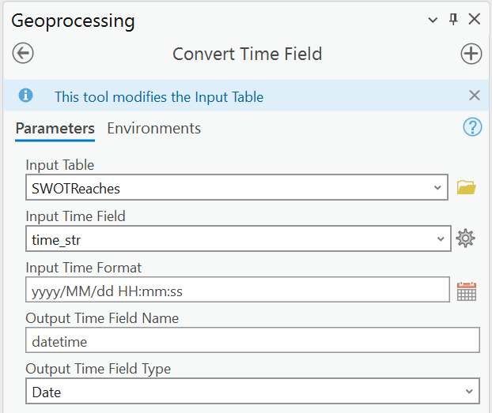
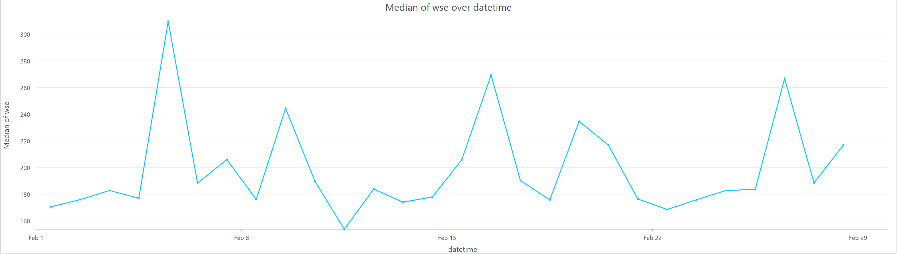
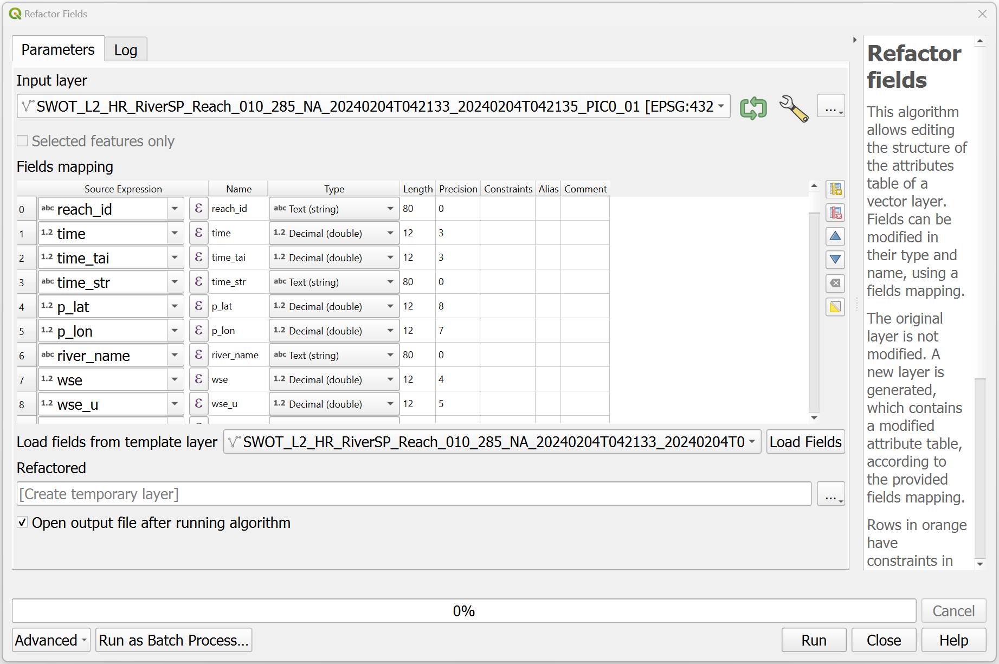
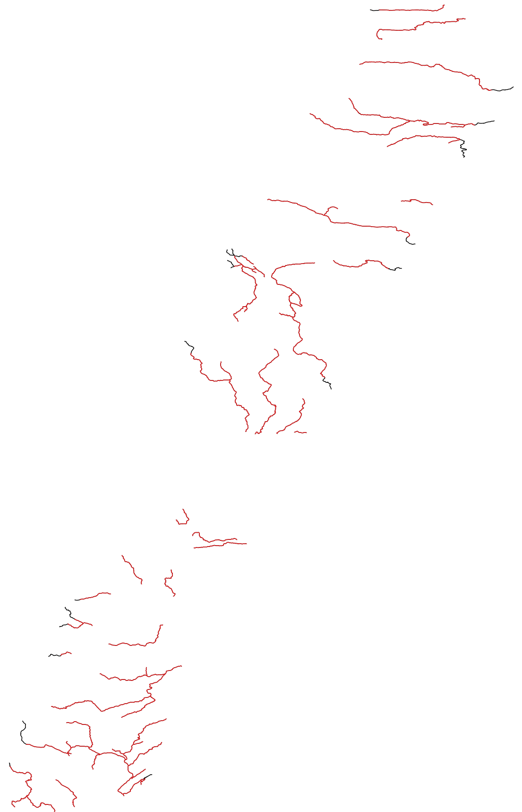
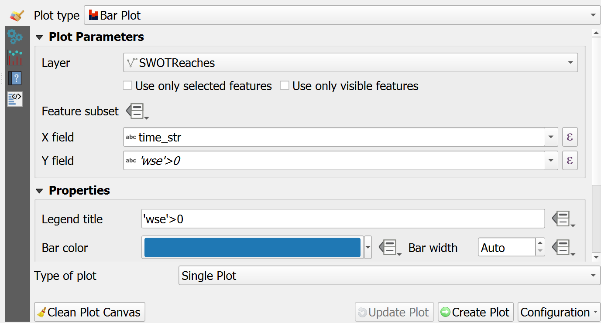
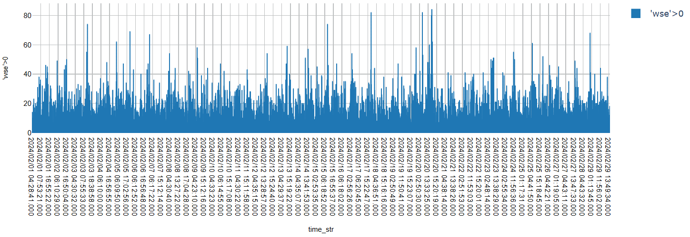

import os
import glob
from pathlib import Path
import numpy as np
import pandas as pd
import geopandas as gpd
import matplotlib.pyplot as plt
import contextily as cx
import zipfile
import earthaccess
from earthaccess import Auth, DataCollections, DataGranules, StoreSWOT Date/Time Transformation
SWOT Date/Time Transformation
Authored by Nicholas Tarpinian, PO.DAAC
Summary
The following workflow lets you create time series plots with various Geographical Information System (GIS) Desktop softwares by transforming SWOT_L2_HR_RiverSP_1.0 Shapefile vector datasets.
Requirements
1. Compute environment
- Local compute environment e.g. laptop, server: this tutorial can be run on your local machine.
2. Earthdata Login
An Earthdata Login account is required to access data, as well as discover restricted data, from the NASA Earthdata system. Thus, to access NASA data, you need Earthdata Login. Please visit https://urs.earthdata.nasa.gov to register and manage your Earthdata Login account. This account is free to create and only takes a moment to set up.
Learning Objectives:
- Accessing SWOT shapefile hydrology dataset through earthaccess and downloading it locally.
- Utilizing geoprocessing tools with GIS Desktop Softwares; ArcGIS Pro and QGIS.
- Transforming ‘time_str’ attribute/variable to a Date/Time data type.
- Utilizing the new data type variable to create a time series plot/chart.
Import libraries
Authentication with earthaccess
In this notebook, we will be calling the authentication in the below cell.
auth = earthaccess.login()Search using earthaccess for SWOT River Reaches
Each dataset has it’s own unique collection concept ID. For this dataset it is SWOT_L2_HR_RiverSP_2.0. SWOT files come in “reach†and “node†versions in this same collection, here we want the 10km reaches rather than the nodes. We will also only get files for North America, or ‘NA’.
results = earthaccess.search_data(short_name = 'SWOT_L2_HR_RIVERSP_2.0',
temporal = ('2024-01-01 00:00:00', '2024-01-21 23:59:59'), # can also specify by time
granule_name = '*Reach*_NA_*') # here we filter by Reach files (not node), continent code=NAGranules found: 136Download the Data into a folder
earthaccess.download(results, "../datasets/data_downloads/SWOT_files") Getting 136 granules, approx download size: 0.5 GB
File SWOT_L2_HR_RiverSP_Reach_008_507_NA_20240101T092042_20240101T092050_PIC0_01.zip already downloaded
File SWOT_L2_HR_RiverSP_Reach_008_509_NA_20240101T105448_20240101T105453_PIC0_01.zip already downloaded
File SWOT_L2_HR_RiverSP_Reach_008_511_NA_20240101T124226_20240101T124237_PIC0_01.zip already downloaded
File SWOT_L2_HR_RiverSP_Reach_008_513_NA_20240101T143224_20240101T143231_PIC0_01.zip already downloaded
File SWOT_L2_HR_RiverSP_Reach_008_520_NA_20240101T195735_20240101T195745_PIC0_01.zip already downloaded
File SWOT_L2_HR_RiverSP_Reach_008_522_NA_20240101T214107_20240101T214118_PIC0_01.zip already downloaded
File SWOT_L2_HR_RiverSP_Reach_008_524_NA_20240101T232421_20240101T232432_PIC0_01.zip already downloaded
File SWOT_L2_HR_RiverSP_Reach_008_537_NA_20240102T105519_20240102T105524_PIC0_01.zip already downloaded
File SWOT_L2_HR_RiverSP_Reach_008_535_NA_20240102T091313_20240102T091321_PIC0_01.zip already downloaded
File SWOT_L2_HR_RiverSP_Reach_008_539_NA_20240102T124329_20240102T124338_PIC0_01.zip already downloaded
File SWOT_L2_HR_RiverSP_Reach_008_541_NA_20240102T143314_20240102T143322_PIC0_01.zip already downloaded
File SWOT_L2_HR_RiverSP_Reach_008_550_NA_20240102T214148_20240102T214159_PIC0_01.zip already downloaded
File SWOT_L2_HR_RiverSP_Reach_008_552_NA_20240102T232442_20240102T232453_PIC0_01.zip already downloaded
File SWOT_L2_HR_RiverSP_Reach_008_548_NA_20240102T195902_20240102T195906_PIC0_01.zip already downloaded
File SWOT_L2_HR_RiverSP_Reach_008_567_NA_20240103T124418_20240103T124419_PIC0_01.zip already downloaded
File SWOT_L2_HR_RiverSP_Reach_008_563_NA_20240103T091339_20240103T091342_PIC0_01.zip already downloaded
File SWOT_L2_HR_RiverSP_Reach_008_565_NA_20240103T105559_20240103T105606_PIC0_01.zip already downloaded
File SWOT_L2_HR_RiverSP_Reach_008_569_NA_20240103T143411_20240103T143413_PIC0_01.zip already downloaded
File SWOT_L2_HR_RiverSP_Reach_008_578_NA_20240103T214249_20240103T214301_PIC0_01.zip already downloaded
File SWOT_L2_HR_RiverSP_Reach_009_009_NA_20240104T105646_20240104T105647_PIC0_01.zip already downloaded
File SWOT_L2_HR_RiverSP_Reach_008_580_NA_20240103T232513_20240103T232524_PIC0_01.zip already downloaded
File SWOT_L2_HR_RiverSP_Reach_008_576_NA_20240103T200045_20240103T200047_PIC0_01.zip already downloaded
File SWOT_L2_HR_RiverSP_Reach_009_013_NA_20240104T143502_20240104T143504_PIC0_01.zip already downloaded['..\\datasets\\data_downloads\\SWOT_files\\SWOT_L2_HR_RiverSP_Reach_008_507_NA_20240101T092042_20240101T092050_PIC0_01.zip',
'..\\datasets\\data_downloads\\SWOT_files\\SWOT_L2_HR_RiverSP_Reach_008_509_NA_20240101T105448_20240101T105453_PIC0_01.zip',
'..\\datasets\\data_downloads\\SWOT_files\\SWOT_L2_HR_RiverSP_Reach_008_511_NA_20240101T124226_20240101T124237_PIC0_01.zip',
'..\\datasets\\data_downloads\\SWOT_files\\SWOT_L2_HR_RiverSP_Reach_008_513_NA_20240101T143224_20240101T143231_PIC0_01.zip',
'..\\datasets\\data_downloads\\SWOT_files\\SWOT_L2_HR_RiverSP_Reach_008_520_NA_20240101T195735_20240101T195745_PIC0_01.zip',
'..\\datasets\\data_downloads\\SWOT_files\\SWOT_L2_HR_RiverSP_Reach_008_522_NA_20240101T214107_20240101T214118_PIC0_01.zip',
'..\\datasets\\data_downloads\\SWOT_files\\SWOT_L2_HR_RiverSP_Reach_008_524_NA_20240101T232421_20240101T232432_PIC0_01.zip',
'..\\datasets\\data_downloads\\SWOT_files\\SWOT_L2_HR_RiverSP_Reach_008_535_NA_20240102T091313_20240102T091321_PIC0_01.zip',
'..\\datasets\\data_downloads\\SWOT_files\\SWOT_L2_HR_RiverSP_Reach_008_537_NA_20240102T105519_20240102T105524_PIC0_01.zip',
'..\\datasets\\data_downloads\\SWOT_files\\SWOT_L2_HR_RiverSP_Reach_008_539_NA_20240102T124329_20240102T124338_PIC0_01.zip',
'..\\datasets\\data_downloads\\SWOT_files\\SWOT_L2_HR_RiverSP_Reach_008_541_NA_20240102T143314_20240102T143322_PIC0_01.zip',
'..\\datasets\\data_downloads\\SWOT_files\\SWOT_L2_HR_RiverSP_Reach_008_548_NA_20240102T195902_20240102T195906_PIC0_01.zip',
'..\\datasets\\data_downloads\\SWOT_files\\SWOT_L2_HR_RiverSP_Reach_008_550_NA_20240102T214148_20240102T214159_PIC0_01.zip',
'..\\datasets\\data_downloads\\SWOT_files\\SWOT_L2_HR_RiverSP_Reach_008_552_NA_20240102T232442_20240102T232453_PIC0_01.zip',
'..\\datasets\\data_downloads\\SWOT_files\\SWOT_L2_HR_RiverSP_Reach_008_563_NA_20240103T091339_20240103T091342_PIC0_01.zip',
'..\\datasets\\data_downloads\\SWOT_files\\SWOT_L2_HR_RiverSP_Reach_008_565_NA_20240103T105559_20240103T105606_PIC0_01.zip',
'..\\datasets\\data_downloads\\SWOT_files\\SWOT_L2_HR_RiverSP_Reach_008_567_NA_20240103T124418_20240103T124419_PIC0_01.zip',
'..\\datasets\\data_downloads\\SWOT_files\\SWOT_L2_HR_RiverSP_Reach_008_569_NA_20240103T143411_20240103T143413_PIC0_01.zip',
'..\\datasets\\data_downloads\\SWOT_files\\SWOT_L2_HR_RiverSP_Reach_008_576_NA_20240103T200045_20240103T200047_PIC0_01.zip',
'..\\datasets\\data_downloads\\SWOT_files\\SWOT_L2_HR_RiverSP_Reach_008_578_NA_20240103T214249_20240103T214301_PIC0_01.zip',
'..\\datasets\\data_downloads\\SWOT_files\\SWOT_L2_HR_RiverSP_Reach_008_580_NA_20240103T232513_20240103T232524_PIC0_01.zip',
'..\\datasets\\data_downloads\\SWOT_files\\SWOT_L2_HR_RiverSP_Reach_009_007_NA_20240104T091443_20240104T091448_PIC0_01.zip',
'..\\datasets\\data_downloads\\SWOT_files\\SWOT_L2_HR_RiverSP_Reach_009_009_NA_20240104T105646_20240104T105647_PIC0_01.zip',
'..\\datasets\\data_downloads\\SWOT_files\\SWOT_L2_HR_RiverSP_Reach_009_011_NA_20240104T124526_20240104T124530_PIC0_01.zip',
'..\\datasets\\data_downloads\\SWOT_files\\SWOT_L2_HR_RiverSP_Reach_009_013_NA_20240104T143502_20240104T143504_PIC0_01.zip',
'..\\datasets\\data_downloads\\SWOT_files\\SWOT_L2_HR_RiverSP_Reach_009_020_NA_20240104T200135_20240104T200137_PIC0_01.zip',
'..\\datasets\\data_downloads\\SWOT_files\\SWOT_L2_HR_RiverSP_Reach_009_022_NA_20240104T214331_20240104T214342_PIC0_01.zip',
'..\\datasets\\data_downloads\\SWOT_files\\SWOT_L2_HR_RiverSP_Reach_009_024_NA_20240104T232534_20240104T232545_PIC0_01.zip',
'..\\datasets\\data_downloads\\SWOT_files\\SWOT_L2_HR_RiverSP_Reach_009_035_NA_20240105T091203_20240105T091209_PIC0_01.zip',
'..\\datasets\\data_downloads\\SWOT_files\\SWOT_L2_HR_RiverSP_Reach_009_037_NA_20240105T105734_20240105T105738_PIC0_01.zip',
'..\\datasets\\data_downloads\\SWOT_files\\SWOT_L2_HR_RiverSP_Reach_009_039_NA_20240105T124636_20240105T124641_PIC0_01.zip',
'..\\datasets\\data_downloads\\SWOT_files\\SWOT_L2_HR_RiverSP_Reach_009_046_NA_20240105T182057_20240105T182106_PIC0_01.zip',
'..\\datasets\\data_downloads\\SWOT_files\\SWOT_L2_HR_RiverSP_Reach_009_048_NA_20240105T200152_20240105T200159_PIC0_01.zip',
'..\\datasets\\data_downloads\\SWOT_files\\SWOT_L2_HR_RiverSP_Reach_009_050_NA_20240105T214412_20240105T214423_PIC0_01.zip',
'..\\datasets\\data_downloads\\SWOT_files\\SWOT_L2_HR_RiverSP_Reach_009_052_NA_20240105T232605_20240105T232616_PIC0_01.zip',
'..\\datasets\\data_downloads\\SWOT_files\\SWOT_L2_HR_RiverSP_Reach_009_063_NA_20240106T091208_20240106T091215_PIC0_01.zip',
'..\\datasets\\data_downloads\\SWOT_files\\SWOT_L2_HR_RiverSP_Reach_009_065_NA_20240106T105832_20240106T105839_PIC0_01.zip',
'..\\datasets\\data_downloads\\SWOT_files\\SWOT_L2_HR_RiverSP_Reach_009_067_NA_20240106T124927_20240106T124932_PIC0_01.zip',
'..\\datasets\\data_downloads\\SWOT_files\\SWOT_L2_HR_RiverSP_Reach_009_074_NA_20240106T181929_20240106T181935_PIC0_01.zip',
'..\\datasets\\data_downloads\\SWOT_files\\SWOT_L2_HR_RiverSP_Reach_009_076_NA_20240106T200220_20240106T200230_PIC0_01.zip',
'..\\datasets\\data_downloads\\SWOT_files\\SWOT_L2_HR_RiverSP_Reach_009_078_NA_20240106T214453_20240106T214504_PIC0_01.zip',
'..\\datasets\\data_downloads\\SWOT_files\\SWOT_L2_HR_RiverSP_Reach_009_091_NA_20240107T091254_20240107T091256_PIC0_01.zip',
'..\\datasets\\data_downloads\\SWOT_files\\SWOT_L2_HR_RiverSP_Reach_009_093_NA_20240107T110017_20240107T110020_PIC0_01.zip',
'..\\datasets\\data_downloads\\SWOT_files\\SWOT_L2_HR_RiverSP_Reach_009_095_NA_20240107T125037_20240107T125043_PIC0_01.zip',
'..\\datasets\\data_downloads\\SWOT_files\\SWOT_L2_HR_RiverSP_Reach_009_102_NA_20240107T181828_20240107T181837_PIC0_01.zip',
'..\\datasets\\data_downloads\\SWOT_files\\SWOT_L2_HR_RiverSP_Reach_009_104_NA_20240107T200227_20240107T200231_PIC0_01.zip',
'..\\datasets\\data_downloads\\SWOT_files\\SWOT_L2_HR_RiverSP_Reach_009_106_NA_20240107T214554_20240107T214605_PIC0_01.zip',
'..\\datasets\\data_downloads\\SWOT_files\\SWOT_L2_HR_RiverSP_Reach_009_119_NA_20240108T091354_20240108T091357_PIC0_01.zip',
'..\\datasets\\data_downloads\\SWOT_files\\SWOT_L2_HR_RiverSP_Reach_009_121_NA_20240108T110033_20240108T110041_PIC0_01.zip',
'..\\datasets\\data_downloads\\SWOT_files\\SWOT_L2_HR_RiverSP_Reach_009_123_NA_20240108T125128_20240108T125134_PIC0_01.zip',
'..\\datasets\\data_downloads\\SWOT_files\\SWOT_L2_HR_RiverSP_Reach_009_132_NA_20240108T200541_20240108T200552_PIC0_01.zip',
'..\\datasets\\data_downloads\\SWOT_files\\SWOT_L2_HR_RiverSP_Reach_009_134_NA_20240108T214835_20240108T214846_PIC0_01.zip',
'..\\datasets\\data_downloads\\SWOT_files\\SWOT_L2_HR_RiverSP_Reach_009_145_NA_20240109T074219_20240109T074224_PIC0_01.zip',
'..\\datasets\\data_downloads\\SWOT_files\\SWOT_L2_HR_RiverSP_Reach_009_147_NA_20240109T091518_20240109T091528_PIC0_01.zip',
'..\\datasets\\data_downloads\\SWOT_files\\SWOT_L2_HR_RiverSP_Reach_009_149_NA_20240109T110129_20240109T110131_PIC0_01.zip',
'..\\datasets\\data_downloads\\SWOT_files\\SWOT_L2_HR_RiverSP_Reach_009_151_NA_20240109T125241_20240109T125245_PIC0_01.zip',
'..\\datasets\\data_downloads\\SWOT_files\\SWOT_L2_HR_RiverSP_Reach_009_158_NA_20240109T181909_20240109T181919_PIC0_01.zip',
'..\\datasets\\data_downloads\\SWOT_files\\SWOT_L2_HR_RiverSP_Reach_009_160_NA_20240109T200212_20240109T200223_PIC0_01.zip',
'..\\datasets\\data_downloads\\SWOT_files\\SWOT_L2_HR_RiverSP_Reach_009_162_NA_20240109T214725_20240109T214737_PIC0_01.zip',
'..\\datasets\\data_downloads\\SWOT_files\\SWOT_L2_HR_RiverSP_Reach_009_173_NA_20240110T074300_20240110T074305_PIC0_01.zip',
'..\\datasets\\data_downloads\\SWOT_files\\SWOT_L2_HR_RiverSP_Reach_009_175_NA_20240110T091558_20240110T091609_PIC0_01.zip',
'..\\datasets\\data_downloads\\SWOT_files\\SWOT_L2_HR_RiverSP_Reach_009_177_NA_20240110T110242_20240110T110251_PIC0_01.zip',
'..\\datasets\\data_downloads\\SWOT_files\\SWOT_L2_HR_RiverSP_Reach_009_179_NA_20240110T125309_20240110T125313_PIC0_01.zip',
'..\\datasets\\data_downloads\\SWOT_files\\SWOT_L2_HR_RiverSP_Reach_009_186_NA_20240110T181918_20240110T181920_PIC0_01.zip',
'..\\datasets\\data_downloads\\SWOT_files\\SWOT_L2_HR_RiverSP_Reach_009_188_NA_20240110T200242_20240110T200254_PIC0_01.zip',
'..\\datasets\\data_downloads\\SWOT_files\\SWOT_L2_HR_RiverSP_Reach_009_190_NA_20240110T214726_20240110T214737_PIC0_01.zip',
'..\\datasets\\data_downloads\\SWOT_files\\SWOT_L2_HR_RiverSP_Reach_009_201_NA_20240111T073448_20240111T073456_PIC0_01.zip',
'..\\datasets\\data_downloads\\SWOT_files\\SWOT_L2_HR_RiverSP_Reach_009_203_NA_20240111T091647_20240111T091650_PIC0_01.zip',
'..\\datasets\\data_downloads\\SWOT_files\\SWOT_L2_HR_RiverSP_Reach_009_205_NA_20240111T110403_20240111T110413_PIC0_01.zip',
'..\\datasets\\data_downloads\\SWOT_files\\SWOT_L2_HR_RiverSP_Reach_009_207_NA_20240111T125408_20240111T125416_PIC0_01.zip',
'..\\datasets\\data_downloads\\SWOT_files\\SWOT_L2_HR_RiverSP_Reach_009_214_NA_20240111T181943_20240111T181951_PIC0_01.zip',
'..\\datasets\\data_downloads\\SWOT_files\\SWOT_L2_HR_RiverSP_Reach_009_216_NA_20240111T200333_20240111T200345_PIC0_01.zip',
'..\\datasets\\data_downloads\\SWOT_files\\SWOT_L2_HR_RiverSP_Reach_009_218_NA_20240111T214747_20240111T214758_PIC0_01.zip',
'..\\datasets\\data_downloads\\SWOT_files\\SWOT_L2_HR_RiverSP_Reach_009_229_NA_20240112T073526_20240112T073534_PIC0_01.zip',
'..\\datasets\\data_downloads\\SWOT_files\\SWOT_L2_HR_RiverSP_Reach_009_231_NA_20240112T091743_20240112T091750_PIC0_01.zip',
'..\\datasets\\data_downloads\\SWOT_files\\SWOT_L2_HR_RiverSP_Reach_009_233_NA_20240112T110523_20240112T110524_PIC0_01.zip',
'..\\datasets\\data_downloads\\SWOT_files\\SWOT_L2_HR_RiverSP_Reach_009_235_NA_20240112T125520_20240112T125528_PIC0_01.zip',
'..\\datasets\\data_downloads\\SWOT_files\\SWOT_L2_HR_RiverSP_Reach_009_242_NA_20240112T182047_20240112T182049_PIC0_01.zip',
'..\\datasets\\data_downloads\\SWOT_files\\SWOT_L2_HR_RiverSP_Reach_009_244_NA_20240112T200404_20240112T200415_PIC0_01.zip',
'..\\datasets\\data_downloads\\SWOT_files\\SWOT_L2_HR_RiverSP_Reach_009_246_NA_20240112T214708_20240112T214719_PIC0_01.zip',
'..\\datasets\\data_downloads\\SWOT_files\\SWOT_L2_HR_RiverSP_Reach_009_257_NA_20240113T073600_20240113T073608_PIC0_01.zip',
'..\\datasets\\data_downloads\\SWOT_files\\SWOT_L2_HR_RiverSP_Reach_009_259_NA_20240113T091809_20240113T091812_PIC0_01.zip',
'..\\datasets\\data_downloads\\SWOT_files\\SWOT_L2_HR_RiverSP_Reach_009_261_NA_20240113T110627_20240113T110635_PIC0_01.zip',
'..\\datasets\\data_downloads\\SWOT_files\\SWOT_L2_HR_RiverSP_Reach_009_263_NA_20240113T125614_20240113T125619_PIC0_01.zip',
'..\\datasets\\data_downloads\\SWOT_files\\SWOT_L2_HR_RiverSP_Reach_009_270_NA_20240113T182250_20240113T182253_PIC0_01.zip',
'..\\datasets\\data_downloads\\SWOT_files\\SWOT_L2_HR_RiverSP_Reach_009_272_NA_20240113T200456_20240113T200507_PIC0_01.zip',
'..\\datasets\\data_downloads\\SWOT_files\\SWOT_L2_HR_RiverSP_Reach_009_274_NA_20240113T214719_20240113T214730_PIC0_01.zip',
'..\\datasets\\data_downloads\\SWOT_files\\SWOT_L2_HR_RiverSP_Reach_009_285_NA_20240114T073627_20240114T073629_PIC0_01.zip',
'..\\datasets\\data_downloads\\SWOT_files\\SWOT_L2_HR_RiverSP_Reach_009_287_NA_20240114T091854_20240114T091903_PIC0_01.zip',
'..\\datasets\\data_downloads\\SWOT_files\\SWOT_L2_HR_RiverSP_Reach_009_289_NA_20240114T110727_20240114T110737_PIC0_01.zip',
'..\\datasets\\data_downloads\\SWOT_files\\SWOT_L2_HR_RiverSP_Reach_009_291_NA_20240114T125709_20240114T125710_PIC0_01.zip',
'..\\datasets\\data_downloads\\SWOT_files\\SWOT_L2_HR_RiverSP_Reach_009_298_NA_20240114T182340_20240114T182345_PIC0_01.zip',
'..\\datasets\\data_downloads\\SWOT_files\\SWOT_L2_HR_RiverSP_Reach_009_300_NA_20240114T200537_20240114T200548_PIC0_01.zip',
'..\\datasets\\data_downloads\\SWOT_files\\SWOT_L2_HR_RiverSP_Reach_009_302_NA_20240114T214751_20240114T214802_PIC0_01.zip',
'..\\datasets\\data_downloads\\SWOT_files\\SWOT_L2_HR_RiverSP_Reach_009_313_NA_20240115T073728_20240115T073730_PIC0_01.zip',
'..\\datasets\\data_downloads\\SWOT_files\\SWOT_L2_HR_RiverSP_Reach_009_315_NA_20240115T091947_20240115T091954_PIC0_01.zip',
'..\\datasets\\data_downloads\\SWOT_files\\SWOT_L2_HR_RiverSP_Reach_009_317_NA_20240115T110828_20240115T110838_PIC0_01.zip',
'..\\datasets\\data_downloads\\SWOT_files\\SWOT_L2_HR_RiverSP_Reach_009_326_NA_20240115T182515_20240115T182516_PIC0_01.zip',
'..\\datasets\\data_downloads\\SWOT_files\\SWOT_L2_HR_RiverSP_Reach_009_328_NA_20240115T200618_20240115T200629_PIC0_01.zip',
'..\\datasets\\data_downloads\\SWOT_files\\SWOT_L2_HR_RiverSP_Reach_009_330_NA_20240115T214822_20240115T214833_PIC0_01.zip',
'..\\datasets\\data_downloads\\SWOT_files\\SWOT_L2_HR_RiverSP_Reach_009_352_NA_20240116T164155_20240116T164159_PIC0_01.zip',
'..\\datasets\\data_downloads\\SWOT_files\\SWOT_L2_HR_RiverSP_Reach_009_354_NA_20240116T182440_20240116T182447_PIC0_01.zip',
'..\\datasets\\data_downloads\\SWOT_files\\SWOT_L2_HR_RiverSP_Reach_009_356_NA_20240116T200700_20240116T200711_PIC0_01.zip',
'..\\datasets\\data_downloads\\SWOT_files\\SWOT_L2_HR_RiverSP_Reach_009_358_NA_20240116T214913_20240116T214915_PIC0_01.zip',
'..\\datasets\\data_downloads\\SWOT_files\\SWOT_L2_HR_RiverSP_Reach_009_369_NA_20240117T073506_20240117T073513_PIC0_01.zip',
'..\\datasets\\data_downloads\\SWOT_files\\SWOT_L2_HR_RiverSP_Reach_009_371_NA_20240117T092214_20240117T092217_PIC0_01.zip',
'..\\datasets\\data_downloads\\SWOT_files\\SWOT_L2_HR_RiverSP_Reach_009_373_NA_20240117T111244_20240117T111250_PIC0_01.zip',
'..\\datasets\\data_downloads\\SWOT_files\\SWOT_L2_HR_RiverSP_Reach_009_380_NA_20240117T164125_20240117T164135_PIC0_01.zip',
'..\\datasets\\data_downloads\\SWOT_files\\SWOT_L2_HR_RiverSP_Reach_009_382_NA_20240117T182458_20240117T182508_PIC0_01.zip',
'..\\datasets\\data_downloads\\SWOT_files\\SWOT_L2_HR_RiverSP_Reach_009_384_NA_20240117T200801_20240117T200812_PIC0_01.zip',
'..\\datasets\\data_downloads\\SWOT_files\\SWOT_L2_HR_RiverSP_Reach_009_397_NA_20240118T073605_20240118T073614_PIC0_01.zip',
'..\\datasets\\data_downloads\\SWOT_files\\SWOT_L2_HR_RiverSP_Reach_009_399_NA_20240118T092321_20240118T092328_PIC0_01.zip',
'..\\datasets\\data_downloads\\SWOT_files\\SWOT_L2_HR_RiverSP_Reach_009_401_NA_20240118T111335_20240118T111342_PIC0_01.zip',
'..\\datasets\\data_downloads\\SWOT_files\\SWOT_L2_HR_RiverSP_Reach_009_408_NA_20240118T164131_20240118T164136_PIC0_01.zip',
'..\\datasets\\data_downloads\\SWOT_files\\SWOT_L2_HR_RiverSP_Reach_009_410_NA_20240118T182507_20240118T182509_PIC0_01.zip',
'..\\datasets\\data_downloads\\SWOT_files\\SWOT_L2_HR_RiverSP_Reach_009_412_NA_20240118T200842_20240118T200853_PIC0_01.zip',
'..\\datasets\\data_downloads\\SWOT_files\\SWOT_L2_HR_RiverSP_Reach_009_425_NA_20240119T073717_20240119T073725_PIC0_01.zip',
'..\\datasets\\data_downloads\\SWOT_files\\SWOT_L2_HR_RiverSP_Reach_009_427_NA_20240119T092334_20240119T092339_PIC0_01.zip',
'..\\datasets\\data_downloads\\SWOT_files\\SWOT_L2_HR_RiverSP_Reach_009_429_NA_20240119T111444_20240119T111453_PIC0_01.zip',
'..\\datasets\\data_downloads\\SWOT_files\\SWOT_L2_HR_RiverSP_Reach_009_436_NA_20240119T164129_20240119T164135_PIC0_01.zip',
'..\\datasets\\data_downloads\\SWOT_files\\SWOT_L2_HR_RiverSP_Reach_009_438_NA_20240119T182429_20240119T182441_PIC0_01.zip',
'..\\datasets\\data_downloads\\SWOT_files\\SWOT_L2_HR_RiverSP_Reach_009_440_NA_20240119T200933_20240119T200940_PIC0_01.zip',
'..\\datasets\\data_downloads\\SWOT_files\\SWOT_L2_HR_RiverSP_Reach_009_451_NA_20240120T060515_20240120T060523_PIC0_01.zip',
'..\\datasets\\data_downloads\\SWOT_files\\SWOT_L2_HR_RiverSP_Reach_009_453_NA_20240120T073809_20240120T073817_PIC0_01.zip',
'..\\datasets\\data_downloads\\SWOT_files\\SWOT_L2_HR_RiverSP_Reach_009_455_NA_20240120T092450_20240120T092500_PIC0_01.zip',
'..\\datasets\\data_downloads\\SWOT_files\\SWOT_L2_HR_RiverSP_Reach_009_457_NA_20240120T111543_20240120T111554_PIC0_01.zip',
'..\\datasets\\data_downloads\\SWOT_files\\SWOT_L2_HR_RiverSP_Reach_009_464_NA_20240120T164133_20240120T164138_PIC0_01.zip',
'..\\datasets\\data_downloads\\SWOT_files\\SWOT_L2_HR_RiverSP_Reach_009_466_NA_20240120T182501_20240120T182512_PIC0_01.zip',
'..\\datasets\\data_downloads\\SWOT_files\\SWOT_L2_HR_RiverSP_Reach_009_468_NA_20240120T200954_20240120T201005_PIC0_01.zip',
'..\\datasets\\data_downloads\\SWOT_files\\SWOT_L2_HR_RiverSP_Reach_009_479_NA_20240121T055702_20240121T055704_PIC0_01.zip',
'..\\datasets\\data_downloads\\SWOT_files\\SWOT_L2_HR_RiverSP_Reach_009_481_NA_20240121T073851_20240121T073858_PIC0_01.zip',
'..\\datasets\\data_downloads\\SWOT_files\\SWOT_L2_HR_RiverSP_Reach_009_483_NA_20240121T092544_20240121T092549_PIC0_01.zip',
'..\\datasets\\data_downloads\\SWOT_files\\SWOT_L2_HR_RiverSP_Reach_009_485_NA_20240121T111611_20240121T111614_PIC0_01.zip',
'..\\datasets\\data_downloads\\SWOT_files\\SWOT_L2_HR_RiverSP_Reach_009_492_NA_20240121T164206_20240121T164209_PIC0_01.zip',
'..\\datasets\\data_downloads\\SWOT_files\\SWOT_L2_HR_RiverSP_Reach_009_494_NA_20240121T182542_20240121T182553_PIC0_01.zip',
'..\\datasets\\data_downloads\\SWOT_files\\SWOT_L2_HR_RiverSP_Reach_009_496_NA_20240121T201015_20240121T201027_PIC0_01.zip']Unzip shapefiles to existing folder
folder = Path("../datasets/data_downloads/SWOT_files")
for item in os.listdir(folder): # loop through items in dir
if item.endswith(".zip"): # check for ".zip" extension
zip_ref = zipfile.ZipFile(f"{folder}/{item}") # create zipfile object
zip_ref.extractall(folder) # extract file to dir
zip_ref.close() # close fileMerging multiple reaches to a single shapefile
Since a time series plot will be created, merging all the shapefiles to one will be the better option.
# State filename extension to look for within folder, in this case .shp which is the shapefile
shapefiles = folder.glob("*.shp")
# Merge/Combine multiple shapefiles in folder into one
gdf = pd.concat([
gpd.read_file(shp)
for shp in shapefiles
]).pipe(gpd.GeoDataFrame)
# Export merged geodataframe into shapefile
gdf.to_file(folder / 'SWOTReaches_Jan.shp')ArcGIS Pro
Esri’s ArcGIS Pro offers a geoproccesing tool called ‘Convert Time Field’.
This allows the transformation of date and time values to be created from one field to another.
In this case the date/time field ‘time_str’ is in a text data type format. It needs to be converted to a date/time data type in order to create a time series plot.
The ‘no_data’ values do not get converted; it keeps it as ‘NULL’

Once the new field is created, this allows for the creation of a time series plot.
This is a great way to observe an area with multiple days of measurements.
In this case, we will configure a line plot in the chart properties of the median of water surface elevation ‘wse’.

QGIS
QGIS offers a geoproccesing tool called ‘Refactor Fields’.
This modifies the date/time values of the current field and creates a new layer.
In this case the date/time field ‘time_str’ can be changed to a date/time data type.

In the ‘type’ section, you can select the data type of your choosing but for this case we will select ‘Date & Time’.
The new layer created does not include the ‘no_data’ values.
As shown in the image below; the black symbology is the original layer and the red symbology is the newly created layer without the ‘no_data’ values.

Within the processing toolbox, to create a time series select the ‘Plots’ category to show the various ways of plotting data.
There also is the option of using the plugin DataPlotly, which utilizes the python library Plotly.
This offers a variety of ways to plot and customize your charts.
For this example, we will configure a box plot looking at both time and ‘wse’. Also, querying ‘wse’ to only include values greater than 0, so it does not include any negative values.

This plot showcases the data without the date/time transformation for a single month.
This plot is the same single month dataset but with the date/time transformation.

This plot showcases a single pass river reach as the same transformed image from above.